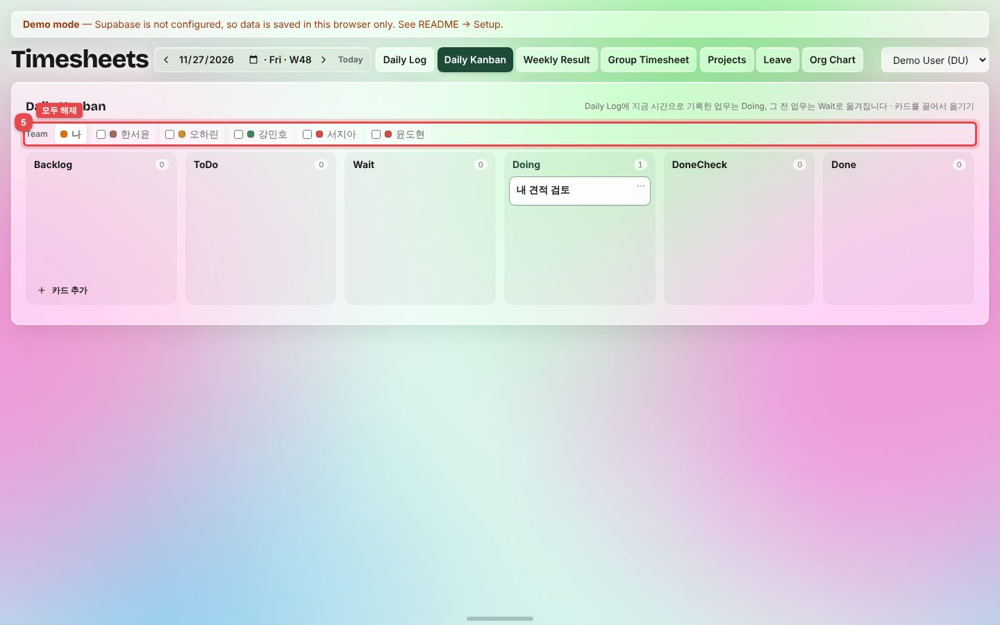

검증 보고서 · E2E
Daily Kanban 팀원 보기 + 사람별 색 필터
요청
Daily Kanban에도 Team 체크를 추가하고, 체크하면 그 사람의 업무를 같은 Kanban에 표시(카드에 이름). Team에 색상 속성을 부여해 인원별 색상으로 필터링. Daily Log는 지금처럼 아래쪽으로.
인수 기준
- Daily Kanban 위에 팀원 체크(볼 수 있는 사람만). 체크한 사람의 카드가 내 카드와 같은 칸에 들어오고, 카드에 그 사람 이름.
- 팀원 카드는 읽기만(끌기·… 메뉴 없음), 내 카드는 예전처럼 끌어서 옮김.
- 사람마다 색을 줄 수 있고(나에게만 적용), 카드의 이름표와 왼쪽 줄이 그 색. 팀원 창(Daily Log)에도 같은 색.
- 색으로 보기: 색을 누르면 그 색 사람의 카드만, 같은 색 사람은 함께, 전체로 되돌림.
- 체크와 색은 새로 고쳐도 그대로, 모두 해제하면 내 카드만.
테스트 케이스
| # | 테스트 케이스 | 기대 결과 | 실제 결과 | 판정 근거 (Assertion) | 결과 | 증적 |
|---|---|---|---|---|---|---|
| 1 | 팀원을 체크하면 그 사람 카드가 같은 칸에, 카드에 이름 | 체크 목록에 볼 수 있는 5명, Wait·Doing에 서지아·윤도현 카드(이름표), 내 카드도 이름표 '나' | 목록 [한서윤, 오하린, 강민호, 서지아, 윤도현] · Wait [주간 회의@서지아, 시험 지원@서지아, 도면 검토@윤도현, 설계 회의@윤도현] · Doing [부품 리스트 정리@서지아, 3D 모델링@윤도현] · Backlog [내 견적 검토@나] | kanban-team 체크박스 5개, 카드의 data-person 이 서지아/윤도현/나 | PASS | 화면 1 |
| 2 | 팀원 카드는 읽기만, 내 카드는 팀원 카드 사이로 끌어 옮김 | 서지아 카드 draggable=false·메뉴 0, 내 카드 draggable=true·메뉴 1, 끌어 놓으면 내 카드만 Doing, 팀원 카드 그대로 | 서지아 false/0, 나 true/1, 내 카드 → doing, 팀원 카드 그대로 true | draggable 속성, Options 버튼 수, 저장된 상태(내 카드 status 'doing', 다른 사람 카드 상태·순서 변화 없음) | PASS | — |
| 3 | 사람에게 색 주기: 카드 왼쪽 줄·이름표, 팀원 창에도 같은 색 | 서지아 = 빨간색 rgb(212, 76, 71): 카드 왼쪽 줄 같은 색, 이름표는 연한 빨강, Daily Log 팀원 창 점도 rgb(212, 76, 71) | 왼쪽 줄 rgb(212, 76, 71), 이름표 color(srgb 0.929176 0.705176 0.696941), 팀원 창 rgb(212, 76, 71) | computed border-left-color / 팀원 창 색 점 background-color 비교, 이름표가 흰색·회색이 아님 | PASS | 화면 2 |
| 4 | 색으로 보기: 그 색 사람의 카드만, 같은 색은 함께 | 서지아 색만 → 서지아 카드만; 윤도현도 빨강 → 색 칩 '서지아 · 윤도현' 하나, 누르면 두 사람 카드만(내 카드 없음) | 서지아만 [서지아] · 칩 [전체 | 나 | 서지아 · 윤도현] · 빨강만 [서지아, 윤도현] | 보이는 카드의 data-person 집합, Color filter 버튼 글자 | PASS | 화면 2 |
| 5 | 새로 고쳐도 체크·색 그대로, 모두 해제하면 내 카드만 | 체크 [서지아, 윤도현], 서지아 줄 rgb(212, 76, 71); 해제 후 카드 1장(내 것), 이름표 0, 색 필터 없음 | 체크 [서지아, 윤도현], 줄 rgb(212, 76, 71); 해제 후 카드 1, 이름표 0, 색 필터 0 | checked 체크박스 이름, border-left-color, 해제 후 kanban-card 1 · card-person 0 · Color filter 0 | PASS | 화면 3 |
| 6 | 볼 사람이 없으면(L1) 팀원 줄 없음 | 0개 | 0개 | kanban-team 수 === 0 | PASS | — |
| 7 | 페이지 오류 없음 | 0건 | 0건 | pageerror 수 === 0 | PASS | — |
증적 (주석 스크린샷)
빨간 테두리와 번호는 표의 테스트 케이스 번호입니다. 그 요소를 확인해 판정했습니다.

1팀원을 체크하면 그 사람 카드가 같은 칸에, 카드에 이름1팀원을 체크하면 그 사람 카드가 같은 칸에, 카드에 이름

4색으로 보기: 그 색 사람의 카드만, 같은 색은 함께3사람에게 색 주기: 카드 왼쪽 줄·이름표, 팀원 창에도 같은 색

5새로 고쳐도 체크·색 그대로, 모두 해제하면 내 카드만
용어
- 테스트 리포트 (Test Report)
- 무엇을 어떻게 확인했고 결과가 어땠는지 정리한 검증 보고서. 이 문서.
- 테스트 케이스 (Test Case)
- 확인 항목 하나. 표의 한 줄.
- 인수 기준 (Acceptance Criteria)
- 요청이 "다 됐다"고 볼 조건. 테스트 케이스는 여기서 나온다.
- 기대 결과 / 실제 결과 (Expected / Actual)
- 나와야 하는 것과 실제로 나온 것. 판정 근거의 조건을 만족하면 PASS.
- 단언 (Assertion)
- 판정 조건을 코드로 쓴 것. 표의 "판정 근거" 열.
- 증적 (Test Evidence)
- 통과를 보여 주는 증거. 여기서는 주석 스크린샷.
- 주석 스크린샷 (Annotated Screenshot)
- 확인한 요소에 빨간 테두리와 테스트 케이스 번호를 그린 화면.
- E2E 테스트 (End-to-End)
- 실제 브라우저(Chromium)로 사용자처럼 눌러 보며 확인하는 테스트. 이 보고서의 테스트.
- 단위 테스트 (Unit Test)
- 함수 하나를 따로 확인하는 테스트(npm test).
- 회귀 테스트 (Regression Test)
- 새 기능 때문에 예전 기능이 깨지지 않았는지 전체를 다시 돌리는 것(npm run test:e2e).
- 추적성 (Traceability)
- 요청 ↔ 테스트 ↔ 커밋을 서로 찾아갈 수 있게 연결해 두는 것. 머리말의 커밋·스위트 정보.